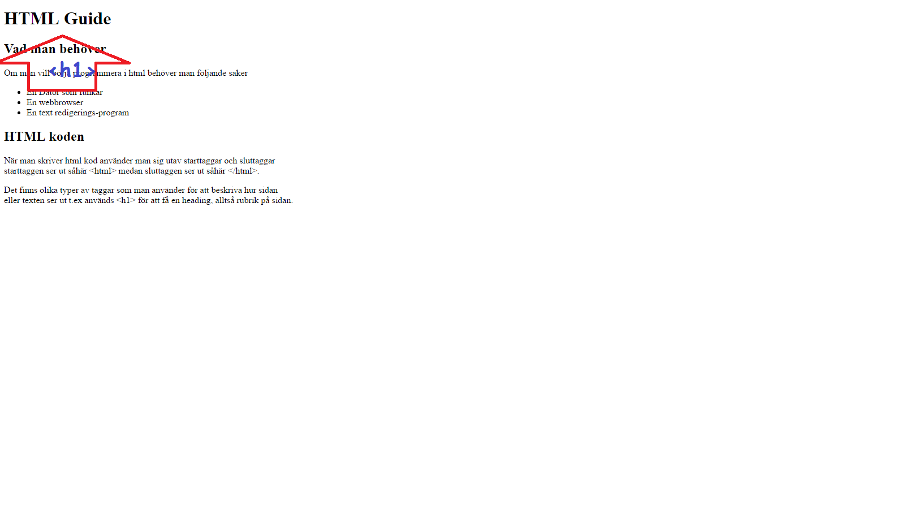

Om man vill börja programmera i html behöver man följande saker
När man skriver html kod använder man sig utav starttaggar och sluttaggar starttaggen ser ut såhär <html> medan sluttaggen ser ut såhär </html>.
Det finns olika typer av taggar som man använder för att beskriva hur sidan eller texten ser ut t.ex används <h1> för att få en heading, alltså rubrik på sidan.
